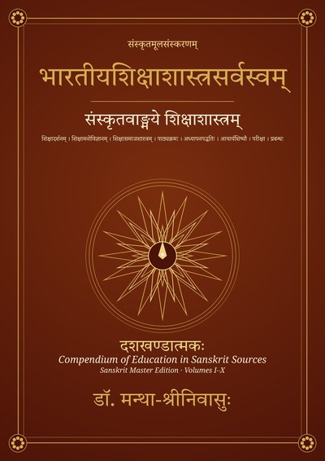

भारतीयशिक्षाशास्त्रसर्वस्वम्
संस्कृतवाङ्मये शिक्षाशास्त्रम् · दशखण्डात्मकः · संस्कृतमूलसंस्करणम्
Google PlayLibraryसंस्कृतवाङ्मये शिक्षाविषये यत् किमपि चिन्तितं, तत् सर्वं प्रथमवारम् एकस्मिन् ग्रन्थे अवधारणाक्रमेण संगृहीतम्। वेदाः, उपनिषदः, धर्मशास्त्राणि, आयुर्वेदः, अर्थशास्त्रम्, दर्शनानि, काव्यनाटकानि, बौद्धजैनग्रन्थाः, शिलालेखाः, देशभाषासाहित्यं च — एतेषु विकीर्णं शिक्षाचिन्तनम् अत्र दशसु खण्डेषु, 118 अध्यायेषु, 584 अंशेषु सस्रोतः विन्यस्तम्।
प्रत्येकस्मिन् अंशे — मूलपाठः, सुनिश्चितः स्थाननिर्देशः, व्याख्या; प्रत्यध्यायान्ते च विमर्शबिन्दवः, आधुनिकसिद्धान्तैः (पियाजे, ब्लूम्, ड्यूई, वाइगोत्स्की, शुल्मन् इत्यादिभिः) सह तुलना, बी.एड्.–आई.टी.ई.पी.–एम्.एड्.–शिक्षाशास्त्री–शिक्षाचार्य-पाठ्यक्रमैः सह सम्बन्धः, प्रायोगिककार्यं, सन्दर्भग्रन्थाः च।
खण्डाः — 1 शिक्षामूलम् । 2 शिक्षादर्शनम् । 3 अधिगमः । 4 विकासः । 5 शिक्षासमाजः । 6 पाठ्यक्रमः । 7 अध्यापनपद्धतिः । 8 आचार्यः शिष्यश्च । 9 परीक्षा प्रबन्धश्च । 10 विशेषशिक्षा।
परिशिष्टानि — मूलपाठप्रतीकानुक्रमणी, उद्धृतग्रन्थानुक्रमणी, व्यक्तिनामानुक्रमणी, विषयानुक्रमणी, आधुनिकपारिभाषिकपदानुक्रमणी, पाठ्यक्रमसमन्वयः, सन्दर्भग्रन्थसूची च।
अध्यापकशिक्षकाणां, शोधार्थिनां, शिक्षाशास्त्रिछात्राणां, राष्ट्रियशिक्षानीतेः (2020) अनुसारं भारतीयज्ञानपरम्परां पाठ्यक्रमे योजयितुम् इच्छतां च कृते उपयुक्तः ग्रन्थः। आङ्ग्ल-हिन्दी-तेलुगुसंस्करणानि अपि समानैः अंशक्रमाङ्कैः उपलभ्यन्ते।